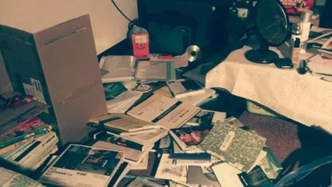

20歳で迷っていた私へ：夢を追う暮らし方
はじめに：
「夢を追う暮らし方」は大学4年のときに書いたものです。少し書いては手を止め、卒業して働き始めて数か月後にまた少し書き足して、千字以上たまった原稿は、ずっと完成しませんでした。そろそろ完成させるときだと思います。この数年の実践と収穫で、原稿と、つまり当時の途方に暮れていた自分と、対話してみます。（ほら、来たよ〜）
当時は、夢についての迷いや推測を書き留めるために書いたもので、いま、その推測に答えを出してみようとしています。このタイトルがずっと好きなのは、「夢みたいな暮らし方」を追うことと、「夢を追う」暮らし方という、ふたつの意味が入っているからです：「自分が夢見る暮らし方がどんな姿なのかわかっていて、それを目標に追いかけているのか？ 自分の夢が何かわかっていて、夢を追うことにともなう暮らし方を、喜んで受け入れられるのか？」
私が欲しいのは、いったいどちらなのでしょう？
大学4年のある日、（唯一の）オールのカラオケのあと、明け方に家へ帰って、床いっぱいに散らかった本を眺めていたら、意識が妙にはっきりしていました。前の晩、急に訪ねてきた友人に、部屋の散らかりぶりを丸見えにされたことが、「そろそろ、自分の散らかりと正直に向き合うときだ」という合図のように思えたのです。

大学の課題は「欠乏」
専門と呼べる技能がなく、学科の専門を伸ばしていくことへの興味も失い、でも思い切って休学や転科をする勇気もなくて、「欠乏するから自信がなくなり、自信がないから焦る」状態が、2年生から3〜4年も続きました。自分を磨かずにのんびりだらだら過ごす日には、罪悪感さえありました。
自分が何を好きで、何をしたいのかわからず、将来に迷いだらけだったので、興味がもてそうな文化、語学、他学科の授業をたくさん取り、メディアや教育の学外活動に参加し、いろいろな分野やジャンルの本を読みました。そのなかで、得意と苦手、向いていることと向いていないこと、好きと嫌いを見つけて、少しずつ消去して、分類して、まとめていくことで、自分を知っていきました。
この充実して学んだ日々は、楽しくて、地に足がついていました。能力を証明できるような具体的な積み重ねはほとんどなく（たとえばフランス語とスペイン語を2年勉強しても、検定は受けませんでした）、その後の就職活動にはあまり役に立ちませんでしたが、そのあとの日々で、視野や考え方、学術研究、人間関係、暮らしの楽しみ(?)などに、じわじわと効いています。
けれど、当時の目的は、これらの試みを通して、自分が本当にやりたいことや、専門を育てたい分野を見つけることでした。その点では、結果は失敗でした。
ほとんど進歩なし、と言っていい
はっきりした目標も専門性もなかったので、卒業後の就職活動はつらくて、迷いだらけでした。結局、学科に関係する会社に入って、こう自分を説得しました：「まずは自分が少し詳しい分野で働いて、ほかの業界でも役に立つ力を身につけよう！」
その判断が正しかったのか間違っていたのか、今もわかりません。その仕事は半年という短い期間しか続かず、もちろん実務の経験は積みましたが、履歴書が輝くような大きな成果は残せませんでした。いちばんの収穫は自分自身にあって、「私は、会社そのものが自分の価値観や理想に合っているかどうかを、給料や福利厚生、組織文化、残業の多さよりずっと重視するんだ（たぶん）」と、深く思い知ったことです。
大学時代にひまわり学生運動を経験した私は、「社会を変えたい」という思いが芽生えていましたが、当時の自分は小さくて無力で、具体的な方法も方向も言えず、その思いを心の底にしまっていました。忘れたことはなく、ただ、こんなに前向きで立派な思いを口にするのが恥ずかしかっただけです。
思い切って辞めた理由のひとつは、大学の先生に大学院へ誘われ（沼に引き込まれ）、無事に合格したことです（詳しくは〈Looking Back | 大学院で過ごした3年間〉を）。そのころは、フルタイムの院生にはなりたくなくて、アルバイトが必要でした。そこで、華やかなのに、これといった成果も残っていない過去の経験をもう一度見直したとき、まったく関係のない、環境にやさしい生活習慣から、ふとひらめきました：「生活習慣＝自分が信じること。それをほかの人にも信じてもらう＝社会を変える？ たぶん……？」
その後、大学院に通いながら、環境関係の財団でアルバイトもしました。何か大きなことをしたとは言えませんが、いくつかの環境問題は、ここ数年でどんどん多くの人に見られ、語られるようになりました。社会を変えることに、ほんの少しは力を出せたのではないかと思います。
大学院を修了して、財団も辞めました（やっぱり、いちばんやりたいことではないと感じたからです）。「社会を変えたい」という思いは変わらず、ただ、少し賢そうな言い方に変わりました：「社会的インパクトを持ちたい」。この願いは、当時と同じようにあいまいです。
卒業後の仕事は、知識の翻訳と普及に関わるもので、仕事量が多く、冷たい仕事マシーンにならざるをえませんでした。つらいけれど楽しい、という感覚のまま、体が警告を出すまで走って、そこで別の推測に答えを出したくなりました：「やりたいことには、送りたい暮らしも含まれるのか？」
大事なのは「夢」だけではないのかもしれない
「…毎日、自然に目が覚めるまで寝て、起きたら家を軽く掃除して、斌が畑から戻るのを待って、のんびり朝ごはんを食べて、本を読みます。それから、その日に自分で決めた仕事が、拓絵（拓繪）か、授業の準備か、文章を書くことかを見て、音楽を聴きながら仕事を始めます……だから、平均すると、1日に本当に働いている時間は、たぶん4時間未満です……働く時間がこんなに少ないなら、ほかの時間は何をしているのか？ ほかの時間は、したいことをするんです！……2万何千元（台湾ドル）で足りるのか？ 鹿野では、足りるどころか、貯金もできます……」――廖瞇〈お金を稼ぐ仕事の時間について〉（中国語）
「夢を追う暮らし方」を書いたときは、廖瞇さんの暮らしの記録に触発されたのだと思います。こういう暮らしもありえるのだと知って、深く憧れました。「たぶん……大事なのは、遠くの夢にたどり着くことだけではなくて、自分が心地いいと感じる暮らし方とリズムを持つことも大事なんじゃないか」と。それが、長い目で見たときの方法なのかもしれません。
でも、社会に飼いならされていた私は、その考えを疑って、「夢を見つけて、夢を追う」道を試し続けることを選びました。ところが、この仮説を検証する道のりで、「夢を追うために、ある暮らし方に耐えられるか」を検証するのは、とても難しくてつらく、「自分の夢見る暮らし方がどんな姿か」を探るほうが、比較的ずっと簡単でした。私も、痛みを経て、この道に進みました。
そして今の私は、夢見た暮らし方を手にして、満足しています――フリーランスの働き方は、廖瞇さんの「働く時間は少なく、ほかの時間はしたいことをする」とだいたい同じです。いまの収入は、心配がないといえるほどではなく、この暮らし方を長く続けるための方法を、これからも探しています。
夢のほうは、フリーランスで過ごすこの日々のなかで、少しずつ形が見えてきていて、「したいことをする」時間を使って、ゆっくり進めています。ただ、自信を持って大きく発信できる時期ではないので、ここまでにしておきます。
おわりに
もしかしたら、夢に向かって、茨の道を切り開いていく日々こそ、本当に生きていると感じられる、という人もいるかもしれません。それもすてきです。私もかつてはそう信じて、そういう人になりたくて試してみましたが、自分には合っていないとわかりました。（いつか合う日が来るかもしれません。少なくとも今は違います）
結局、自分で歩いてみて初めて、自分が何を求めているのか、何が合っているのかがわかるのです。